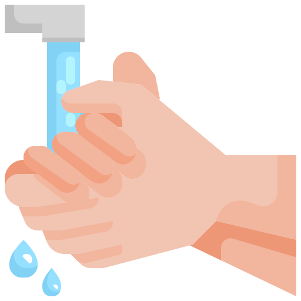
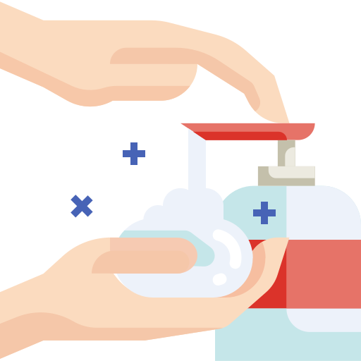
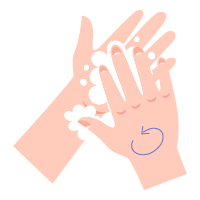
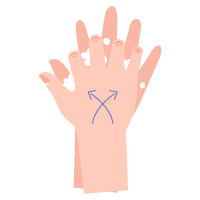
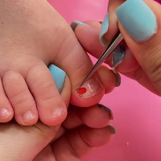
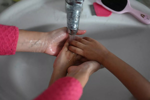

Grupo 1 · Inicial I
Hábitos de Aseo
Lavado de Manos y Autonomía Infantil
El desarrollo de hábitos de higiene favorece la autonomía, previene enfermedades y fortalece el bienestar integral del niño de 3 a 4 años.
Aprender el procedimiento
El desarrollo de hábitos de higiene favorece la autonomía, previene enfermedades y fortalece el bienestar integral del niño de 3 a 4 años.
Aprender el procedimiento
Los hábitos de higiene constituyen una de las primeras manifestaciones de autonomía infantil y deben fortalecerse mediante la práctica diaria tanto en el hogar como en el centro educativo.
Reduce la transmisión de virus y bacterias.
Incrementa la independencia del niño.
Promueve ambientes seguros.
Favorece la salud integral.
Aprender la secuencia ayuda a desarrollar la autonomía y disminuir enfermedades.

Abrir el grifo y humedecer completamente ambas manos.

Utilizar suficiente jabón para cubrir toda la superficie.

Realizar movimientos circulares durante al menos 20 segundos.

Entrelazar los dedos y frotar cuidadosamente para eliminar la suciedad.

Frotar las uñas sobre la palma y limpiar cuidadosamente los pulgares.

Retirar completamente el jabón utilizando abundante agua limpia.

Secar completamente las manos con una toalla limpia o papel desechable.
Existen momentos clave durante el día en los que el lavado de manos ayuda a prevenir enfermedades.
Eliminar microorganismos antes de manipular alimentos.
Evita la propagación de bacterias y virus.
Mantiene una adecuada higiene personal.
Especialmente si se ha estado en contacto con tierra o arena.
Reduce la transmisión de enfermedades respiratorias.
Evita la contaminación cruzada.
¿Recuerdas el orden correcto del lavado de manos?
| Paso | Orden |
|---|---|
| Mojar las manos | |
| Aplicar jabón | |
| Frotar las palmas | |
| Frotar entre los dedos | |
| Limpiar uñas y pulgares | |
| Enjuagar | |
| Secar correctamente |
| Indicador | Sí | En proceso | No |
|---|---|---|---|
| Se moja las manos sin ayuda. | |||
| Utiliza jabón. | |||
| Frota correctamente. | |||
| Enjuaga completamente. | |||
| Seca correctamente. |
Visualiza la técnica correcta del lavado de manos.